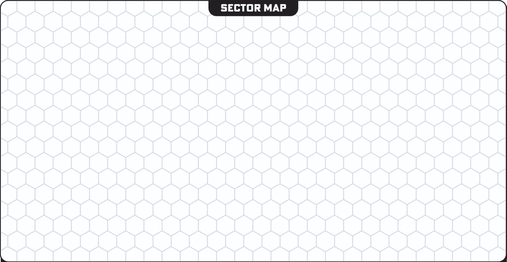

Kalidas Maw

Kalidas Maw
Sector Trouble
The plants on Holland have gotten significantly more aggressive in the last few arcs. Surface operations are losing equipment faster than Beacon can replace it, and the co-op vote on whether to push deeper or pull back has been deadlocked for weeks. Meanwhile, Lodestar is reporting that the crawler-platforms on Centurion have started moving. Nobody knows where they're going or why, but after sitting dormant for as long as anyone can remember, it's making people nervous.